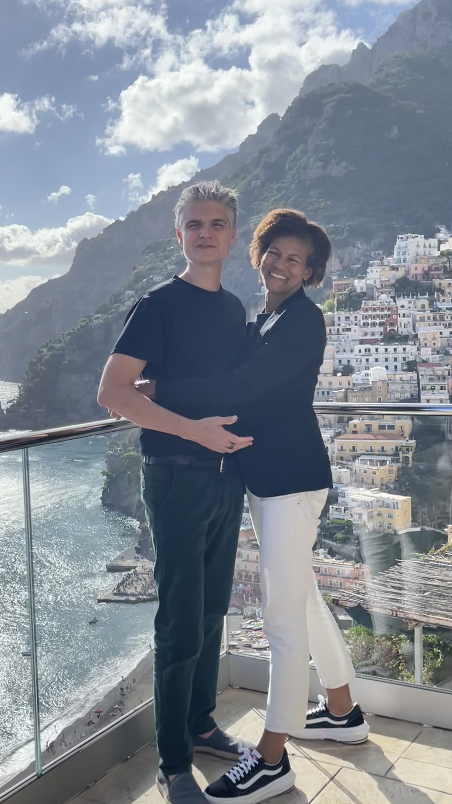
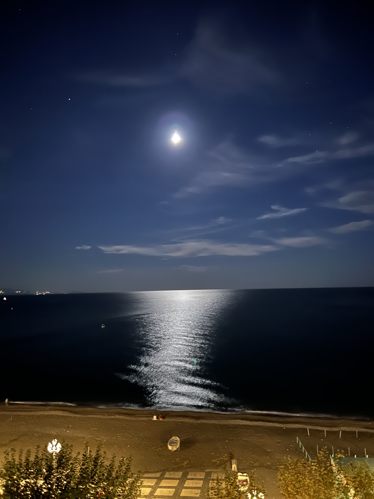

Positano
Positano is absolutely beautiful. I must return one day soon. The beautiful homes pressed into the rocky cliffs. The colorful homes that go back to the begining of time and the smells of lemons everywhere. Let's not talk about the creamy lemon sorbet that I devoured.

Evening Strolls along the Amalfi Coast
On this particular evening, we decided to talk a little evening stroll to the next town over, Manori.
The roads are narrow but very walkable. As we strolled, we could not take our eyes off of the sea
and magical glow of the moon. The lovely street lamps that lined our little town, Minori also make up
one of the wonderful memories of that vacation.

Exploring along the Coast of Capri
After taking the boat to Capri, we decided to hire a tour guide. We debated but
in the end it was a great choice. The main reason being that it allowed us to skip
the crazy lines that were every where. The guide mentioned things here and there but
one thing that stood out was that this picture was taken not far from where Lenin made a major decision.